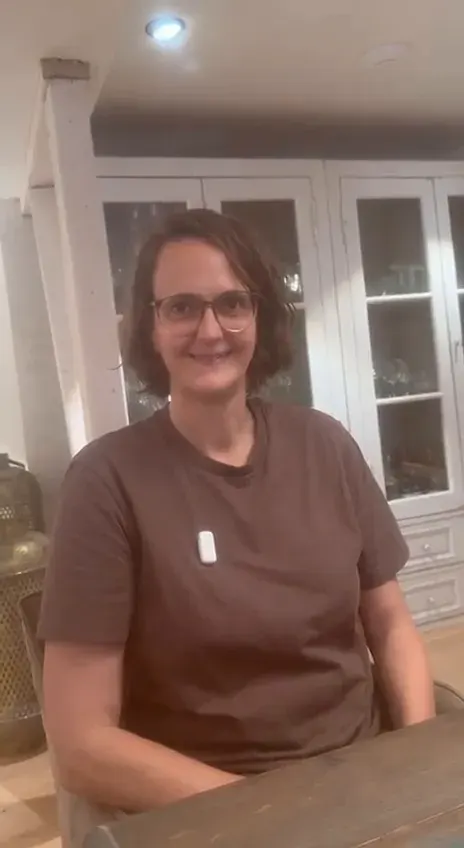
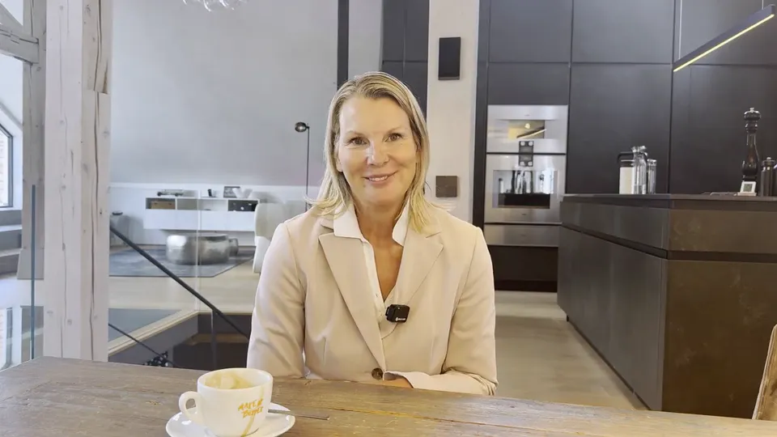

Private Vorschau, nicht online. Seite Unternehmer & Experten nach deinem Masterhandbuch. Rot gestrichelt = Vorschlag von Vinci oder fehlende Angabe von dir.
Deine Expertise soll nicht nur sichtbar, sondern spürbar werden.
Für Unternehmer, Berater, Coaches, Trainer und Speaker mit Geschäftskunden: Claudia Conen, Expertin für menschliche Wirkungskraft, arbeitet mit dir daran, dass man dich erkennt, dir vertraut und dich bucht. Persönlichkeit, Botschaft und Präsenz sind die Werkzeuge, KI ist der Verstärker, nicht der Ersatz.Vorschlag
Perfektion ist klickbar geworden. Was nicht klickbar ist, bist du.
Je mehr Texte, Bilder und Angebote auf Knopfdruck entstehen, desto ähnlicher wird alles.
KI kann Inhalte erzeugen. Wirkung entsteht durch den Menschen.
Menschen vertrauen Menschen, deren Worte und Haltung zusammenpassen.
Ausgangslage
Dein Problem ist nicht Können. Es ist Vergleichbarkeit.
Du bist gut in dem, was du tust. Das bestreitet niemand. Nur steht neben dir jemand, der dasselbe verspricht, und für den, der bucht, sieht beides gleich aus.
Die Frage ist also nicht, wie du besser wirst. Sie lautet, woran man dich erkennt, wenn dein Name nicht danebensteht.
Woran du es erkennst
Deine Expertise ist größer als deine erkennbare Positionierung.
Du klingst wie andere Anbieter.
KI-generierte Texte passen nicht zu deiner Persönlichkeit.
Bühne, Kamera, Pitch oder Kundengespräch transportieren deine Kompetenz nicht überzeugend.
Du wirst über Leistungen und Preise verglichen, statt über Vertrauen und Perspektive gewählt.
Ergebnis
Du wirst als Mensch klar erkennbar, glaubwürdig hörbar und geschäftlich wirksam.
Am Ende steht kein gutes Gefühl, sondern etwas, das du vorzeigen kannst. Zum Beispiel:Auswahl: Vorschlag
Ein SatzDeine Positionierung in einem Satz, den du selbst überzeugend sagen kannst.
Ein PitchEin Satz, den du sagen kannst, ohne nachzudenken – und zwei Varianten davon: eine für dreißig Sekunden, eine für zwei Minuten.
Drei GeschichtenEine über dich, eine über einen Kunden, eine über einen Fehler. Alle drei gesprochen, nicht nur geschrieben.
Ein AuftrittEine fertige Keynote, ein sitzender Pitch oder ein Kameraauftritt.
So arbeitet Claudia
Erst der Kern. Dann die Botschaft. Dann der Auftritt. Dann KI.Vorschlag
Alle Themen auf dieser Seite folgen der Wirkungskraft-Methode: vier Schritte in fester Reihenfolge.
01Persönlichkeit erkennenWofür stehst du?
02Botschaft klärenWas soll bei deinem Gegenüber ankommen?
03Wirkung verkörpernWie werden Persönlichkeit und Botschaft hörbar und sichtbar?
04KI sinnvoll verstärkenWie unterstützt KI dich, ohne dich austauschbar zu machen?
Wofür stehst du – in einem Satz, den ein anderer wiederholen kann?
Kompetenz allein macht noch keine unverwechselbare Marke. Entscheidend ist, ob Menschen erkennen, wofür du stehst, dir vertrauen und dich im Kopf behalten.
Eine Positionierung ist nicht, was du über dich denkst, sondern das, was hängenbleibt.
So entsteht dein Satz
Rückwärts: Ihr geht deine letzten zehn Aufträge durch. Wofür wurdest du wirklich geholt? Das ist selten das, was auf der Webseite steht.
Weglassen: Alles streichen, was auch auf andere passt. Was übrig bleibt, ist schmal und fühlt sich zu klein an. Das ist das Zeichen, dass es stimmt.
Formulieren: Mehrere Fassungen, laut gesprochen. Ein Satz, der auf Papier gut aussieht und sich beim Sprechen sperrt, ist der falsche.
Probe: Du sagst den Satz drei Menschen, die du nicht kennst, und fragst, was sie verstanden haben.
Nachziehen: Der Satz gilt erst, wenn er überall steht: Profil, Seite, Angebot, Vorstellung im Gespräch.
Wenn KI-generierte Texte nicht nach dir klingen: Aus deinem Satz und deiner Sprache entsteht im vierten Schritt ein persönliches Sprachprofil, mit dem KI in deinem Ton vorarbeitet.Vorschlag
„Die Texte fühlen sich für mich so an, als hätte ich sie selber gesagt.“
Melanie Miniaci, Gründerin von MidermaQuelle: Videostimme auf claudiaconen.com

„Ich habe mit Claudia zusammen eine Rede erstellt und einstudiert, die ich vor einem technischen Publikum halte.“
Dr.-Ing. Ann-Kathrin Andresen, Verfahrenstechnikerin, Mentorin und Beraterin · Ing.-upQuelle: Videostimme auf claudiaconen.com
Schritt 3 · Wirkung verkörpern
Auftritt & Performance
Der Inhalt sitzt. Warum wirkt der Auftritt trotzdem unsicher?
Weil Wirkung auf der Bühne nicht am Text hängt, sondern an drei Dingen, die man vergisst, sobald man aufgeregt ist: wo man steht, wohin man schaut, und ob man eine Pause aushält. Alle drei lassen sich üben.
Ob Keynote, Präsentation vor dem Vorstand oder Kundengespräch: Du arbeitest an einem echten Auftritt, den du wirklich halten wirst. Nicht an einem Übungsthema.
Woran ihr arbeitet
Stand und Bewegung: wann man geht, wann man stehen bleibt und warum das ein Unterschied ist.
Der Blick: wohin man in einem großen Saal schaut, und wohin in einem kleinen Raum.
Pausen setzen und aushalten.
Stimme im Raum: tragen statt lauter werden. Das sind zwei verschiedene Dinge.
Was tun, wenn etwas schiefgeht: Technik weg, Blackout, Zwischenruf.
Aufnahme und gemeinsames Ansehen. Unangenehm, und der wirksamste Teil.

„Ich habe sie wirklich abgelegt, diese Scheu vor der Kamera.“
Verena Sommerfeld, Bauingenieurin und Energieberaterin · EsslingenQuelle: Videostimme auf claudiaconen.com
Schritt 3 · Wirkung verkörpern
Stimme, Kamera & Präsenz
Vor Menschen kannst du sprechen. Warum nicht vor der Kamera?
Weil die Kamera nicht zurückschaut. Im Raum merkt man, ob jemand folgt, und passt sich an. Vor der Linse fehlt genau diese Rückmeldung – und das Ergebnis klingt entweder gehetzt oder wie vorgelesen.
Die Stimme ist dabei der Zugang, die Persönlichkeit ist das Ergebnis. Über die Stimme wird erkennbar, wie jemand zu sich steht.
Woran ihr arbeitet
Ein Gedanke pro Video, zu Ende gebracht. Das ist schwerer, als es klingt.
Sprechen vor der Kamera: Tempo, Pausen, und wohin man schaut, wenn niemand zurückschaut.
Deine eigenen Geschichten in Formate bringen, die auch ohne Ton funktionieren.
Ein Plan, den du durchhältst. Lieber wenig und verlässlich als viel und einmal.
Was du brauchst und was nicht. Für den Anfang reichen Telefon, Fenster und ein ruhiger Raum.
Untertitel für beide Videos fehlen noch (§22). Nutzungsfreigabe der Videostimmen für die neue Seite: bitte von dir.
Schritt 2 · Botschaft klären
Storytelling & Pitch
Was antwortest du, wenn jemand fragt: Und was machst du so?
Die meisten antworten mit ihrem Beruf. Das ist die Frage nach dem Etikett, aber gemeint war: Warum sollte ich weiterfragen?
Und dann die Geschichte dahinter. Weitererzählt wird, was sich nacherzählen lässt. Eine Zahl kann man nicht nacherzählen. Eine Szene schon.
Elevator Pitch: dein Satz in drei Längen
Dein Ergebnis in Worte fassen: was hinterher anders ist, nicht was du tust.
Der Satz in drei Längen: ein Halbsatz, dreißig Sekunden, zwei Minuten.
Die Anschlussfrage einbauen, damit ein Gespräch entsteht statt einer Pause.
Laut sprechen, aufnehmen, hören, ändern – so lange, bis er sitzt.
Was tun, wenn das Gegenüber abwinkt, unterbricht oder etwas ganz anderes will.
Storytelling: dein Vorrat an Geschichten
Geschichten finden: die drei Sorten, die in jedem Berufsleben liegen.
Den Einstieg an die richtige Stelle legen, nicht an den Anfang.
Szene statt Zusammenfassung: ein Ort, eine Uhrzeit, ein Satz, den jemand gesagt hat.
Der Bruch: der Moment, in dem es hätte schiefgehen können.
Aufhören, bevor du es erklärst.
Dieselbe Geschichte in einer Minute, in fünf Minuten und in einem Satz.
Gearbeitet wird ausschließlich mit Erlebtem. Am Ende stehen die Geschichten dort, wo sie gebraucht werden: im Vortrag, im Kundengespräch, auf der ersten Seite deiner Webseite.
Elevator-Pitch-Kurs und Storytelling-Kurs sind hier als Bausteine eingeordnet (offene Frage 4 der Inventur). Bleibt das so, oder gehören die Kurse nach „Rund ums Reden“? Format, Dauer und Preis: bitte von dir.
Warum sollte man dich buchen – und nicht den nächsten Experten?
Vor einer Keynote, einem Pitch, einer Verhandlung oder einem öffentlichen Auftritt arbeitet Claudia mit dir allein an genau der Situation, die ansteht.Vorschlag
Manchmal braucht es keinen Marathon, sondern einen Sprint. In 90 Minuten konzentriert ihr euch auf eine konkrete Herausforderung und erarbeitet gemeinsam eine Lösung.
Positionierung schärfen
Elevator Pitch
Feedback zu deiner Keynote
Konkrete Stimmfragen
Vorbereitung auf wichtige Verkaufsgespräche
Den nächsten Schritt in deinem Business klären
Vorher ein kurzes Vorgespräch, danach eine Zusammenfassung mit Plan für die Umsetzung.
Bisheriger Name „Gold-Training“: neuer Name und Preis bitte von dir.
90-Tage-Wirkungskraft-Mentoring
Eine Einzelbegleitung. Am Ende steht kein gutes Gefühl, sondern etwas, das du vorzeigen kannst: eine fertige Keynote, ein sitzender Pitch oder ein Kameraauftritt – und deine Positionierung in einem Satz, den du selbst überzeugend sagen kannst.
Feste Termine, dazwischen Arbeit an deinen echten Auftritten.
Laufzeit: dein Handbuch nennt 90 Tage, die bestehende Mentoring-Seite zwölf Wochen. Preis: offen. Beides bitte von dir.
Formate
Wie du mit Claudia arbeitestVorschlag
Einzeln
Executive-Sparring 1:1
Fokus-Sitzung oder 90-Tage-Mentoring: konzentrierte Arbeit an deinem Anlass, im Tempo deines Kalenders.
Zum Hineinschnuppern gibt es die 7-Tage-Wirkungskraft-Challenge (Start 26. Oktober). Sie ist ein Einstieg, kein eigenes Angebot.VorschlagZur Challenge
Nach der Zusammenarbeit: Die Unverwechselbaren, der kuratierte Raum für Kunden und Alumni, die als Mensch und Experte erkannt werden wollen.VorschlagMehr zur Community
Wirkungsreise
Raus aus dem Alltag. Rein in die Entscheidung.Vorschlag
Die Wirkungsreise ist eine exklusive strategische Intensivbegleitung für Unternehmer und Führungspersönlichkeiten – außerhalb des Alltags.
Mit Abstand zum Tagesgeschäft arbeitest du an Positionierung, Botschaft und Auftritt, so konzentriert, wie es zwischen zwei Terminen nicht geht.Vorschlag
Ort, Dauer, Termin, Teilnehmerkreis und Preis: bitte von dir. Offene Frage aus der Inventur: Wird die Spanien-Woche mit Gabi Lindemann zur Wirkungsreise, oder läuft sie getrennt?
Speaker-Ausbildung
Speakerin oder Speaker werden
Du hast ein Fachgebiet. Was fehlt, ist das Thema, mit dem ein Veranstalter dich ankündigt – und eine Stimme, die einen Saal hält.
Eine klare Positionierung, große methodische Tiefe.Vorschlag
Claudia Conen ist Expertin für menschliche Wirkungskraft – bekannt als „Die Umsatzstimme“.
Seit 37 Jahren ist sie als Coach und Trainerin unterwegs. Was sie mit dir erarbeitet, hat sie selbst auf Bühnen, vor der Kamera und im Kundengespräch erprobt. Die Belege stehen oben: Stimmen von Menschen, die mit ihr gearbeitet haben.Vorschlag
Denn KI kann berechnen, doch Persönlichkeit begeistert, fasziniert und berührt.
Antworten aus deinen bestehenden Seiten, in Du-Form und mit „Claudia“ statt „ich“.Vorschlag
Ist das auch für Privatpersonen?
Nein. Die Angebote sind für geschäftlich tätige Menschen: Unternehmer, Selbstständige mit etabliertem Angebot, Berater, Coaches, Trainer, Speaker und Führungspersönlichkeiten. Private Lebensberatung gehört nicht dazu.
Ist das Stimmtraining?
Nein. Die Stimme ist der Zugang, die Persönlichkeit ist das Ergebnis. Über die Stimme wird erkennbar, wie jemand zu sich steht. Daran wird gearbeitet, nicht an Tonhöhe und Atemtechnik allein.
Ich mache mehrere Dinge. Muss ich mich auf eines festlegen?
Nicht auf ein Angebot, aber auf einen Satz. Du darfst weiter alles tun – nur die Tür, durch die jemand hereinkommt, sollte eine sein. Wer drinnen ist, entdeckt den Rest von allein.
Bekomme ich einen fertigen Satz von Claudia?
Nein, und das ist Absicht. Ein Satz, den Claudia dir schreibt, klingt nach ihr. Du merkst das beim Sprechen, und dein Gegenüber merkt es auch. Claudia stellt die Fragen, du formulierst, ihr schleift gemeinsam.
Muss ich Privates erzählen?
Nein. Du bestimmst die Grenze, und ihr legt sie ausdrücklich fest, bevor du anfängst. Eine gute Geschichte braucht Nähe, nicht Intimität.
Was kostet die Zusammenarbeit?
Preise bzw. Preisrahmen für Fokus-Sitzung, Mentoring, Programm und Wirkungsreise: bitte von dir. Bis dahin steht diese Frage nicht in den strukturierten Daten.
Nächster Schritt
Woran erkennt man dich, wenn dein Name nicht danebensteht?
Im Kennenlerngespräch klärt ihr, wo du stehst und welches Format passt.Vorschlag